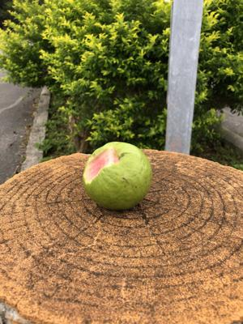
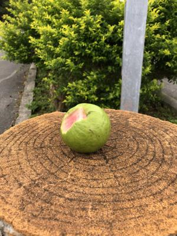
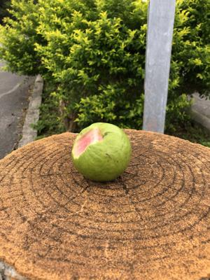

うるがいの話 ある日
最新: サイトが消える
うるがいとは 前提知識です
カニの画像をクリックすると『うるがいの話』サイトを表示します
うるがい(ｳﾙｶﾞｲ urugai)とは、『もずくがに』の名前でとても大きくなります。
たながー（ﾀﾅｶﾞｰtanagaa）とは手長えびのことで、何種類かあり大きいのは車 エビぐらいになります。
ぶながー(bunagaa)とは、赤い髪の毛、赤い身体、そして身長は１ｍ２０ｃｍ ぐらい、川の蟹を食べているの目撃された。場所は沖縄県国頭郡大宜味村のと ある村僕の隣近所に住んでいる爺さんから、聞いた話です。
2021年08月08日 (日）
サイトが消える
16:29

とあるサイトの情報を元に無料タブ譜作成ソフトPower Tab Editor（英語）
をインストール、日本語パッチを当てようと指示されたサイトにいくとサイト
が消えていた。うー、残念！、でなんとか日本語パッチのファイルをダウンロ
ードできないかグーグルで検索し、サイトへ行くとヤバそうなサイトだけ、諦
める。なぜ みっく Guitars が無くなったとか少し調べる
消えたサイト http://www005.upp.so-net.ne.jp/mick-guitars/top.html
結論からいうと、みっく Guitarsが登録していたソネットのホームページ提供
サービスが2021年1月28日（木）で終了していた。ソネットとはSONY系列が
運営するプロバイダーとのこと。少し、遅かった。仕方ないので英語の説明を
みながら利用することにする、うーん、これは音楽専用の単語を覚えれという
お達しかな。ところで、私はNiftyとプロパイダー契約をしてしていると無料
で利用できたホームページサービスで下のアドレスで『うるがいの話』を登録
していた サイトアドレスは http://homepage1.nifty.com/urugai/
ところが２０１７年からホームページサービスは有料へ変更、ただしこれまで
無料で利用していた人は、今のアドレスへ変更することを条件で利用が認めら
ている。いまのところ、利用している無料の@niftyホームページサービスミニ
の停止は無いが、いつまで続くか分からない。そのために、今年の６月２４日
から３か所の無料で利用できるサイトを新規に作成した。収入ないので・・。

 
